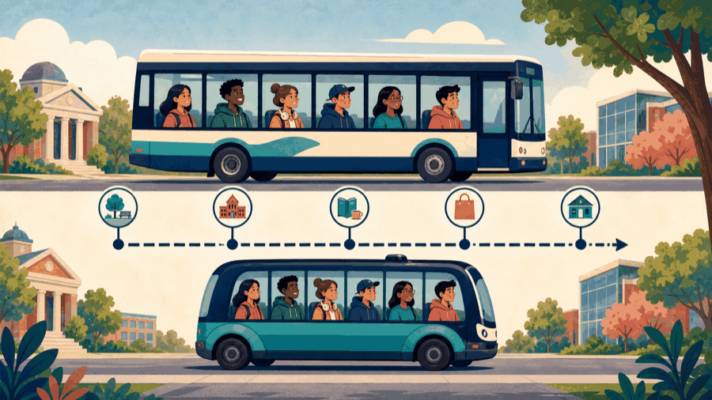
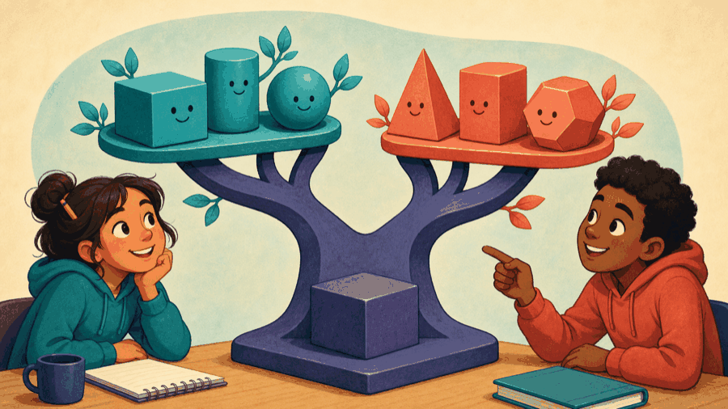

# Lecture 19: Use inheritance only when substitution is safe ## Move from one value type to a justified is-a relationship **Instructor:** [Dr. Debasish Pattanayak](https://drdebmath.github.io)
## Inheritance reuses a stable base abstraction. · Calibrate inherited energy meters A friend calibration function has one narrow privilege; a derived meter reuses the protected correction operation without introducing dynamic dispatch yet. ~~~cpp #include <iostream> class Meter { double offset_ = 0; friend void calibrate(Meter&, double); protected: double corrected(double raw) const { return raw + offset_; } public: double read(double raw) const { return corrected(raw); } }; void calibrate(Meter& meter, double offset) { meter.offset_ = offset; } class EnergyMeter : public Meter { public: double kilowattHours(double raw) const { return corrected(raw); } }; ~~~ **Takeaways** - Inheritance reuses a stable base abstraction. - protected exposes only what derived classes need. - Friend access remains narrow and purposeful.
## Friend access is a narrow exception, not an interface ~~~cpp class Complex { double real, imaginary; public: Complex(double r, double i) : real(r), imaginary(i) {} friend std::ostream& operator<<(std::ostream&, const Complex&); }; ~~~ A friend is a non-member granted narrow access. Friendship is not inheritance or a security boundary.
## Public inheritance promises substitutability If <code>ElectricCar</code> publicly inherits <code>Vehicle</code>, every operation promised by <code>Vehicle</code> must remain meaningful for <code>ElectricCar</code>. This is an **is-a** relationship, not merely code reuse.
## A helper asks for the master key to the whole workshop <figure class="course-meme-figure"> <figcaption> <p class="course-meme-setup"><strong>Setup</strong> A helper asks for the master key to the whole workshop.</p> <p class="course-meme-punchline"><strong>Punchline</strong> One narrow hatch, not a second front door.</p> </figcaption> </figure>
## A class hierarchy makes shared promises and specialization explicit ~~~text Vehicle ├── Bicycle └── Car └── ElectricCar ~~~ The base owns common behavior; derived classes add or refine specialized behavior.
## A small base interface leaves derived types to specialize ~~~cpp class Vehicle { public: int wheels() const { return 4; } }; class ElectricCar : public Vehicle { public: int batteryPercent() const { return 80; } }; ~~~ A <code>protected</code> member would be hidden from ordinary callers but accessible inside derived members. Prefer a small function over exposing raw state. Passing a derived object to a base reference tests substitutability.
## The specialized vehicle calls itself an "is-a" version <figure class="course-meme-figure"> <p></p> <figcaption> <p class="course-meme-setup"><strong>Setup</strong> The specialized vehicle calls itself an "is-a" version of the base.</p> <p class="course-meme-punchline"><strong>Punchline</strong> Then it has to keep every stop the original route promised.</p> </figcaption> </figure>
## Base construction completes before derived construction 1. Base members are initialized. 2. The base constructor runs. 3. Derived members are initialized. 4. The derived constructor runs. Destruction occurs in the reverse order.
## Composition models has-a without forcing substitutability A <code>Car</code> has an <code>Engine</code>; it is not an engine. Composition usually exposes fewer dependencies and is easier to change. Inheritance is appropriate only when substitutability is defensible.
## The family tree wants to share what is genuinely common <figure class="course-meme-figure"> <p></p> <figcaption> <p class="course-meme-setup"><strong>Setup</strong> The family tree wants to share what is genuinely common.</p> <p class="course-meme-punchline"><strong>Punchline</strong> Trunk carries the shared promise; branches earn their specialty.</p> </figcaption> </figure>
## Game evolution: Snake and Cleaner can share a world | Today's concept | Exact game part enabled | |---|---| | friend, inheritance, and composition | compare two occupants while only Cleaner has a dirt sensor | ~~~cpp struct DirtSensor { bool dirty=false; }; class GridOccupant { unsigned cell_; friend bool sameCell(const GridOccupant&,const GridOccupant&); public: explicit GridOccupant(unsigned cell):cell_(cell) {} }; bool sameCell(const GridOccupant& a,const GridOccupant& b){ return a.cell_==b.cell_; } class SnakeHead:public GridOccupant { public: explicit SnakeHead(unsigned c):GridOccupant(c){} }; class Cleaner:public GridOccupant { DirtSensor sensor_; public: explicit Cleaner(unsigned c):GridOccupant(c){} }; ~~~ **Design test:** both derived objects substitute for <code>const GridOccupant&</code>; the sensor remains a has-a member. **Next unlock · L20:** select different actor behavior through one virtual interface.
## Use inheritance for is-a contracts and composition for owned parts - Friend access is narrow and explicit. - Public inheritance models is-a and substitutability. - A hierarchy shares a justified base abstraction. - Base construction precedes derived construction. - Prefer composition for has-a relationships.
## Verify Calibrate inherited energy meters with a claim, trace, boundary, and improvement Use the practical example as a small experiment. Before you leave, make the reasoning visible: - **Claim:** Inheritance reuses a stable base abstraction. - **Trace:** name the state that changes and the observation that would confirm it. - **Boundary:** choose one smallest, largest, empty, or invalid input that could expose a defect. - **Improvement:** explain one change that would make the solution clearer or safer. ### Exit ticket Choose one problem to solve now and two to attempt in the lab: - Build a Vehicle base class with Car and Bicycle specializations. - Demonstrate public, protected, and private member accessibility. - Use a friend function to compare private measurements from two objects.
## Explain Calibrate inherited energy meters without opening the code Explain today’s idea to a partner without opening the code: 1. State the input, output, and one rule the solution must preserve. 2. Point to the operation that makes progress or changes the state. 3. Name the first test you would run after changing the implementation. If the explanation needs “and then another unrelated thing,” split the design before you code.
## Solve five problems to transfer Calibrate inherited energy meters **IC151 lab practice · 5 problems** 1. Build a Vehicle base class with Car and Bicycle specializations. 1. Demonstrate public, protected, and private member accessibility. 1. Use a friend function to compare private measurements from two objects. 1. Explain why a polymorphic base class needs a virtual destructor. 1. Refactor duplicated derived-class behavior into a base class. Reaching this set marks the lecture as studied in this browser. [Open the IC151 lab setup and batch schedule](ic151.html).
## Share genuine agent behavior without claiming false is-a relationships. **Studio thread:** Design a family of cleaning agents | Ask | Today’s answer | |---|---| | **Problem** | Share genuine agent behavior without claiming false is-a relationships. | | **Model** | Specialized agents must remain usable wherever the base contract is expected. | | **Represent** | A shallow hierarchy models is-a; member objects model has-a. | | **Solve** | Extract only the common promise and compose independent capabilities. | | **Verify** | Substitute each derived type in base-level scenarios. | | **Improve** | Replace inheritance with composition when substitutability is hard to defend. | **Technique lens:** object-oriented abstraction **Compare:** inheritance versus composition